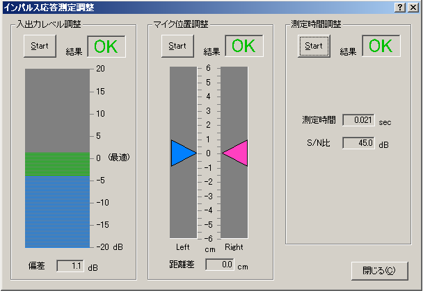

DSSF3 > RA > インパルス応答測定 > 測定ガイド
調整機能の説明
確認の意味でテスト測定を行い、入出力レベルや測定時間の調整を行うことができます。これらの測定は、シグナルジェネレータで試験信号を出し、FFTアナライザやオシロスコープで代替することも可能ですが、これら一連の調整は、パソコンのサウンドシステムの一連のテストになります。
インパルス応答測定ウィンドウの右上にある[調整]ボタンをクリックすると、インパルス応答測定調整ウィンドウが開きます。3種類の調整項目の[Start]ボタンをクリックして問題がない場合、下記の画像のようにOKと表示されます。

入出力レベル調整
入出力の「レベル調整」のチェックができます。ここでNGがでる場合、インパルス応答測定以前の問題があります。
- マイクアンプ等の入力の増幅が不足している（または大きすぎる）、マイクの出力が不足。
- サウンドボード、スピーカーの出力が不足している（または大きすぎる）。
まず各機材のボリュームを調節して、再度チェックを行ってください。自動レベル設定をチェックしている場合、最大音量の70%の再生音量で測定信号を出力しますが、それでもNGがでる場合は、歪みを疑ってボリュームコントロールで再生音量を下げてください。インパルス応答が正常に終了しないときは、マイク入力の不足か信号の歪です。
マイク位置調整
ダミーヘッド等を使用してステレオ測定を行う場合は、2本のマイクを正しく音源に向けることが重要です。 マイク位置調整では、左右の入力レベルが同じになるようにマイクの位置と方向を調整します。
測定時間調整
測定時間は自動でセットされますが、この機能を利用すればマニュアルで最適時間を調べることができます。
必要な測定時間がわからないときに、測定時間調整を行なって調べることができます。実際の測定時には、できればマニュアルでこれより長い時間を設定するようにしてください。
DSSF3 > RA > インパルス応答測定 > 測定ガイド